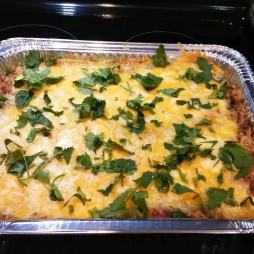

<!DOCTYPE html>
<html lang="en">
</html>
  <head>
    <meta charset="utf-8">
    <title>Cooking recipes</title>
  </head>


  <body>
    <a href="../index.html">Home</a>
    <em></em>
    <strong></strong>
    <h1>Spanish Rice Bake</h1>
    
    <h2>Description</h2>
    <p>Ground beef, fresh onion, green bell pepper, tomatoes and rice are 
       simmered in a sweet-hot sauce of chile, brown sugar,
       cumin and Worcestershire. This savory rice dish is then 
       baked with Cheddar and garnished with fresh cilantro.</p>
    <h2>Ingredients</h2>
    <ul>
        <li>1 pound lean ground beef</li>
        <li>½ cup finely chopped onion</li>
        <li>¼ cup chopped green bell pepper</li>
        <li>1 (14.5 ounce) can canned tomatoes</li>
        <li> 1 cup water ¾ cup uncooked long grain rice</li>
        <li>½ cup chile sauce, 1 teaspoon salt</li>
        <li>1 teaspoon brown sugar, ½ teaspoon ground cumin</li>
        <li>½ teaspoon Worcestershire sauce, 1 pinch ground black pepper</li>
        <li>½ cup shredded Cheddar cheese, 2 tablespoons chopped fresh cilantro</li>
    </ul>
    <h2>Steps</h2>
    <ol>
        <li>Preheat oven to 375 degrees F (190 degrees C).</li>
        <li>Brown the ground beef in a large skillet over medium-high heat. 
            Drain excess fat and transfer beef to a large pot over medium low heat</li>
        <li>Stir in the onion, green bell pepper, tomatoes, water, rice, chile sauce, 
            salt, brown sugar, cumin, Worcestershire sauce and ground black pepper.</li>
        <li>Let this simmer for about 30 minutes, stirring occasionally, then transport 
            this to a 2-quart casserole dish. Press down firmly and sprinkle with the shredded Cheddar cheese.</li>
        <li>Bake at 375 degrees F (190 degrees C) for 10 to 15 minutes, or until cheese is melted and bubbly. 
            Garnish with chopped fresh cilantro.</li>
    </ol>
  </body>
  </html>